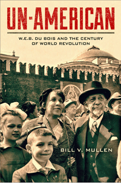

A political biography that presents W.E.B. Du Bois as a life-long global revolutionary, not simply an African American reformer
A political biography that presents W.E.B. Du Bois as a life-long global revolutionary, not simply an African American reformer


 A political biography that presents W.E.B. Du Bois as a life-long global revolutionary, not simply an African American reformer
A political biography that presents W.E.B. Du Bois as a life-long global revolutionary, not simply an African American reformer

|  |
Un-AmericanW.E.B. Du Bois and the Century of World RevolutionBill V. Mullenpaper EAN: 978-1-43991-110-5 (ISBN: 1-4399-1110-X) |
"Bill Mullen�s Un-American is a fascinating account of Du Bois�s revolutionary thinking and a remarkable contribution to Du Bois studies. Mullen explores in impressive detail the long developing influence of Marx, Marxist theoreticians, and a broader spectrum of radical thinkers and activists from across the globe on Du Bois�s political thought and vision for human liberation. In doing so Mullen illuminates seldom-explored writings and activities from the final decades of Du Bois�s career while successfully reinterpreting familiar texts and events from earlier periods. Mullen also develops his own keen theoretical observations from both the insights and contradictions of Du Bois�s thought and that of those with whom he was in dialogue."
—Eric Porter, Professor of History and History of Consciousness at the University of California, Santa Cruz
Un-American is Bill Mullen�s revisionist account of renowned author and activist W.E.B. Du Bois�s political thought toward the end of his life, a period largely dismissed and neglected by scholars. He describes Du Bois�s support for what the Communist International called �world revolution� as the primary objective of this aged radical�s activism. Du Bois was a champion of the world�s laboring millions and critic of the Cold War, a man dedicated to animating global political revolution.
Mullen argues that Du Bois believed that the Cold War stalemate could create the conditions in which the world powers could achieve not only peace but workers� democracy. Un-American shows Du Bois to be deeply engaged in international networks and personal relationships with revolutionaries in India, China, and Africa. Mullen explores how thinkers like Karl Marx, Jawaharlal Nehru, Mohandas Gandhi, and C.L.R. James helped him develop a theory of world revolution at a stage in his life when most commentators regard him as marginalized. This original political biography also challenges assessments of Du Bois as an American �race man.�
Excerpt available at www.temple.edu/tempress
"Un-American is a bold and long overdue inquiry into �the late Du Bois,� full of keen originality and brilliantly associative thinking. With his signature level of professional competence, Mullen defies easy categorizations to track the black radical scholar�s diasporic identity through the optic of �world revolution.� This investigation, vexed by the political horrors of imperialism, fascism, and Stalinism, yields unexpected and revealing parallels with the ideas of revolutionary thinkers such as Leon Trotsky and C. L. R. James. The result is a landmark study in the contours of affiliation, expanding the archive and breaking down polarized thought. This is a book to engage, chew over, and debate."
—Alan Wald, H. Chandler Davis Collegiate Professor of American Culture, University of Michigan
"In this expansively researched and expertly crafted biography of W.E.B. Du Bois (1868�1963) on the global stage, Mullen revisits the often contradictory and dialectical actions, thoughts, hopes, and writings of the sociologist and civil rights activist through post-World War II toward the end of the Cold War.... Mullen has considerable depth and nuance for the work of revisiting his subject as an international figure.... Mullen succeeds in weaving a revisionist narrative that positions Du Bois as a world actor within the revolutionary movements of the 20th century. VERDICT For readers interested in historical biographies situated in international politics and Cold War history."
—Library Journal
"Bill Mullen's new book Un-American explores...Du Bois' thought more thoroughly than any previous work. While every commentator on Du Bois has acknowledged his politics, Mullen shows us how central revolutionary thought was to Du Bois' entire intellectual trajectory in the twentieth century.... This book will open an entirely new window on the radical politics that animated most of his life's work.... Mullen's intervention will surely be felt...for years to come and deserves to be read by everyone with an interest in Black politics and the history of American socialism."
—International Socialist Review
"This is the sort of thoughtful and challenging book that remains with you, that gets you nodding your head unconsciously in agreement, muttering disapprovals, racing to the bookshelf to look up something. It is an essential addition to the canon of W. E. B. Du Bois scholarship.... Mullen wonderfully braids Du Bois's intellectual journey to an eclectic group of revolutionaries likewise drawn�at various times and in different ways�to the project of communist internationalism.... And he explores Du Bois's engagements with liberation struggles in India and China, Japan's global emergence, the specter of Stalinism, and the global peace work engendered by a dynamic cadre of leftist black women, particularly Claudia Jones and Shirley Graham Du Bois. Mullen's treatment of Smedley, Strong, and Jones is particularly sharp and illuminating."
—Journal of American History
Acknowledgments
The Forethought
1. From Comintern to the �Colonial International�: Making the Diasporic International, Making World Revolution
2. �Experiments of Marxism�: W.E.B. Du Bois and the Specter of 1917
3. India, the �Indian Ideology,� and the World Revolution
4. World Revolution at the Crossroads: Japan, China, and the Long Shadow of Stalinism
5. Making Peace: Gendering the World Revolution/Reckoning the Third World
The Afterthought
Notes
Index
Bill V. Mullen is a Professor of American Studies at Purdue University. He is the author of Afro-Orientalism and Popular Fronts: Chicago and African-American Cultural Politics, 1935�1946. He is the co-editor (with Fred Ho) of Afro Asia: Revolutionary Political and Cultural Connections Between African Americans and Asian Americans and (with Cathryn Watson) of W.E.B. Du Bois on Asia: Crossing the World Color Line.
African American Studies
American Studies
History
© 2016 Temple University. All Rights Reserved. This page: http://www.temple.edu/tempress/titles/2305_reg.html.